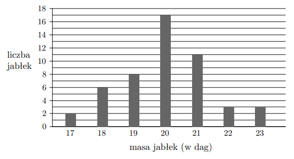

Łącznie: \( \tfrac{1}{2}\cdot \tfrac{1}{2} = \tfrac{1}{4} \). Odp.: C.
Zad. 6
(grudzień 2023 - zad. 29.1)
W hurtowni owoców wyselekcjonowane jabłko spełnia normę jakości, gdy jego masa (po zaokrągleniu
do pełnych dekagramów) mieści się w przedziale [19 dag, 21 dag]. Pobrano próbę kontrolną liczącą
50 jabłek i następnie zważono każde z nich. Na poniższym wykresie słupkowym przedstawiono rozkład masy
jabłek w badanej próbie.

Spośród 50 zważonych jabłek losujemy jedno. Prawdopodobieństwo, że jabłko spełnia normę jakości, jest równe:
Z wykresu: liczba jabłek o masie 19–21 dag = 36.
Łączna liczba jabłek = 50.
Prawdopodobieństwo \( = \tfrac{36}{50} = \tfrac{18}{25} \). Odp.: C.
Zad. 7
(grudzień 2022 - zad. 32)
Na loterii stosunek liczby losów wygrywających do przegrywających = 2 : 7. Kupiono jeden los. Prawdopodobieństwo, że będzie wygrywający:
Losów razem: \(2+7=9\).
Wygrywające = 2.
Prawdopodobieństwo \( = \tfrac{2}{9} \). Odp.: C.
Zad. 8
(wrzesień 2022 - zad. 19)
W pojemniku kule białe : czerwone = 4 : 5. Losujemy jedną kulę. Prawdopodobieństwo kuli białej:
Razem: \(4+5=9\).
Białych: 4.
Prawdopodobieństwo \( = \tfrac{4}{9} \). Odp.: A.
Zad. 9
(sierpień 2022 - zad. 28)
Dwukrotny rzut kostką. \(p\) = prawdopodobieństwo, że w drugim rzucie liczba oczek jest podzielna przez 3.
Liczby podzielne przez 3 na kostce: {3,6} → 2 wyniki z 6.
Prawdopodobieństwo = \( \tfrac{2}{6}=\tfrac{1}{3} \). Odp.: C.
Zad. 10
(czerwiec 2022 - zad. 27)
W pudełku są kule: białe 2× czarne, czarne 3× zielone. Losujemy jedną kulę. Prawdopodobieństwo białej:
W grupie 15 kobiet i 18 mężczyzn. Losujemy jedną osobę.
Prawdopodobieństwo, że wylosujemy kobietę:
Razem osób = 33, kobiet = 15.
Prawdopodobieństwo \(=\tfrac{15}{33}\). Odp.: C.
Zad. 27
(czerwiec 2015 - zad. 25)
Na loterii przygotowano 100 losów, w tym 4 wygrywające.
Po wylosowaniu pewnej liczby losów, wśród których był dokładnie jeden wygrywający,
szansa na wygraną była taka sama jak przed rozpoczęciem. Ile losów wylosowano?
Po losowaniu: \( \tfrac{1}{n}\) (1 wygrany wśród n losów).
\( \tfrac{1}{n}=\tfrac{1}{25}\implies n=25\).
Odp.: D.
Zad. 28
(maj 2015 - zad. 25)
W trzech pojemnikach są pary kul: 1 czerwona i 1 niebieska.
Losujemy po 1 kuli z każdego pojemnika.
Prawdopodobieństwo, że dokładnie 2 z 3 będą czerwone: